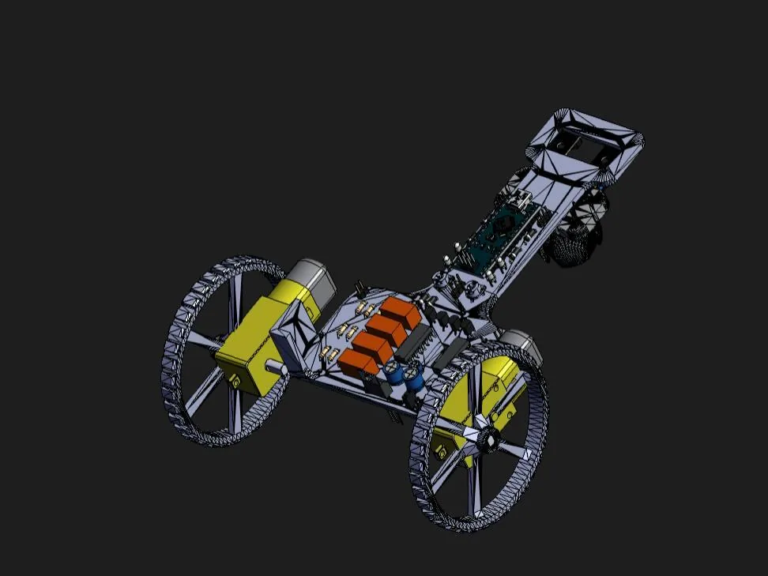
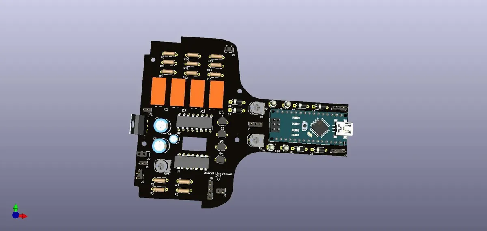

Personal project · written up March 2020
Analog Line Follower with an Arduino Backup
A two-sensor line follower with two controllers on one robot: an LM324N comparator circuit and an Arduino Nano. A jumper cap picks which one drives the L293D motor driver, so a beginner can learn analog and digital control on the same robot, and a failed board does not end a run.

At a glance
- Analog control
- LM324N quad op-amp used as comparators
- Digital control
- Arduino Nano, programmed in the Arduino IDE
- Selector
- A jumper cap switches between the two; the board also carries four KEMET EC2-5NU relays
- Motor driver
- L293D dual H-bridge, two DC gear motors
- Board
- Designed in KiCad; 3D model, schematic and code published
I have liked line-following robots since high school, and I wanted one that is as simple as possible for someone starting out in robotics. The analog board teaches comparators and needs no code; the Arduino teaches digital I/O and a little programming. Having both also means that if one circuit misbehaves during a run, you can switch to the other and keep going.
How it steers
Each sensor reports whether it sees the line. On the analog board the LM324N compares each sensor against a reference and sets the motor-driver inputs directly. The Arduino sketch does the same thing in software:
| Left sensor | Right sensor | Motors |
|---|---|---|
| High | High | Both forward |
| Low | High | Left off, right forward |
| High | Low | Left forward, right off |
| Low | Low | Both off (stop) |
void loop() {
if (digitalRead(leftSensor) && digitalRead(rightSensor)) { // forward
digitalWrite(leftMotor, HIGH); digitalWrite(leftMotor2, LOW);
digitalWrite(rightMotor1, HIGH); digitalWrite(rightMotor2, LOW);
}
if (!digitalRead(leftSensor) && digitalRead(rightSensor)) { // left motor off
digitalWrite(leftMotor, LOW); digitalWrite(leftMotor2, LOW);
digitalWrite(rightMotor1, HIGH); digitalWrite(rightMotor2, LOW);
}
if (digitalRead(leftSensor) && !digitalRead(rightSensor)) { // right motor off
digitalWrite(leftMotor, HIGH); digitalWrite(leftMotor2, LOW);
digitalWrite(rightMotor1, LOW); digitalWrite(rightMotor2, LOW);
}
if (!digitalRead(leftSensor) && !digitalRead(rightSensor)) { // stop
digitalWrite(leftMotor, LOW); digitalWrite(leftMotor2, LOW);
digitalWrite(rightMotor1, LOW); digitalWrite(rightMotor2, LOW);
}
}The board
Both control circuits share one PCB, with the Arduino Nano socketed next to the comparator section. Some of the other 3D models in the assembly came from GrabCAD and other public libraries.

